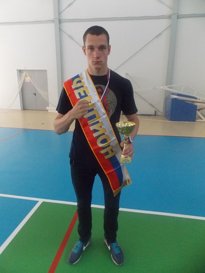
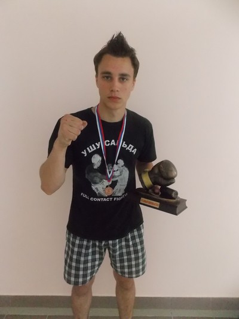
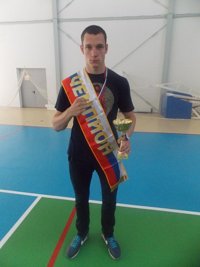
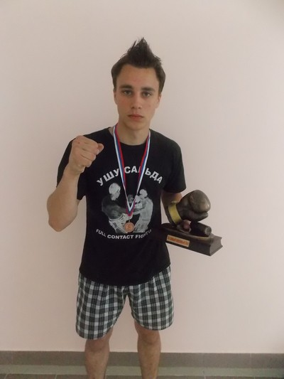
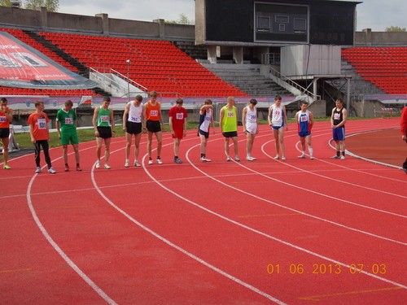

Архив новостей
Новости спорта
Первый открытый турнир по ушу-саньшоу среди детей в Калуге
1-2 июня в Калуге на базе спортивной школы "Динамо" прошел первый открытый турнир по ушу-саньшоу среди детей. В соревнованиях приняли участие 11 тарусских спортсменов, воспитанников Асатряна Эдуарда Багдасаровича, тренера-преподавателя Тарусской детско-юношеской спортивной школы. По итогам соревнований спортсмены из Тарусы заняли 5 первых мест, 4 вторых места и 2 третьих места. Вишкер Дмитрий стал абсолютным чемпионом среди мужчин.
Еще один тарусянин - Каштанов Владимир - был награжден призом за самый красивый бой.
 



{kind=link}
{kind=link}
Спортсмены из Тарусы приняли участие в Чемпионате России по легкой атлетике
{kind=link}
С 31 мая по 2 июня 2013 года спортсмены отделения полиатлона Тарусской детской юношеской спортивной школы приняли участие в Чемпионате России по легкой атлетике среди лиц с ограниченными возможностями, который проходил в городе Красноярске. Высоких результатов в соревнованиях добился Кошкин Максим под руководством тренера-преподавателя Обыденкина С.М. По итогам соревнований он занял 6 место, что является большим достижением для наших спортсменов на соревнованиях такого уровня.
Клуб выходного дня в спортивном комплексе «Лидер»
31 мая 2013 года, в рамках Клуба выходного дня, в спортивном комплексе «Лидер» прошло мероприятие, посвященное Дню отказа от курения. В соревнованиях приняли участие 70 детей - учащиеся 1 – 4 классов Тарусских школ. Для детей были организованы конкурсы и эстафеты. По окончании соревнований все участники были награждены сладкими призами.